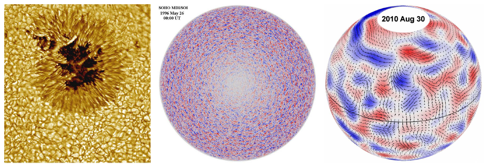
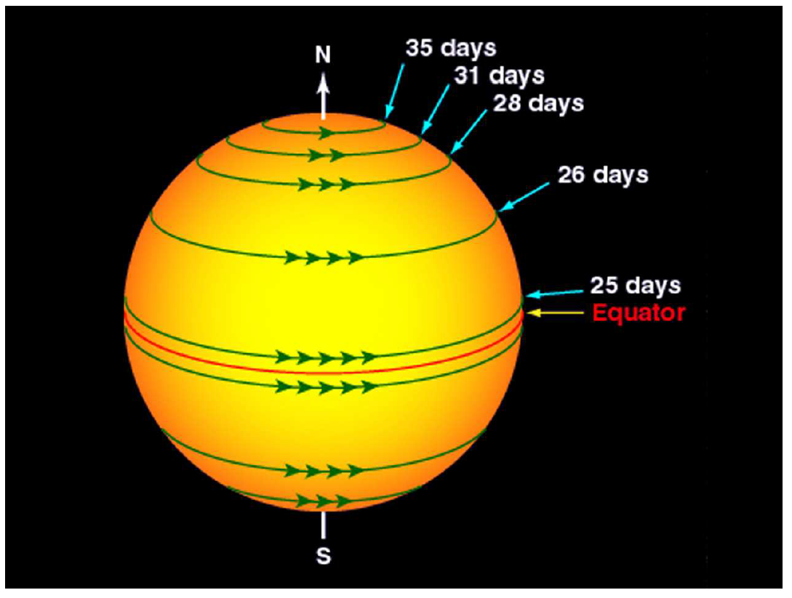
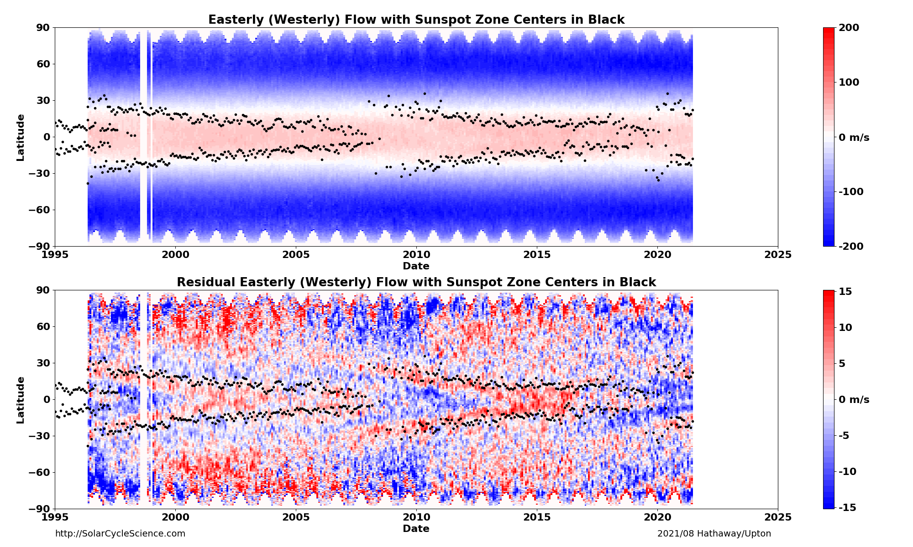
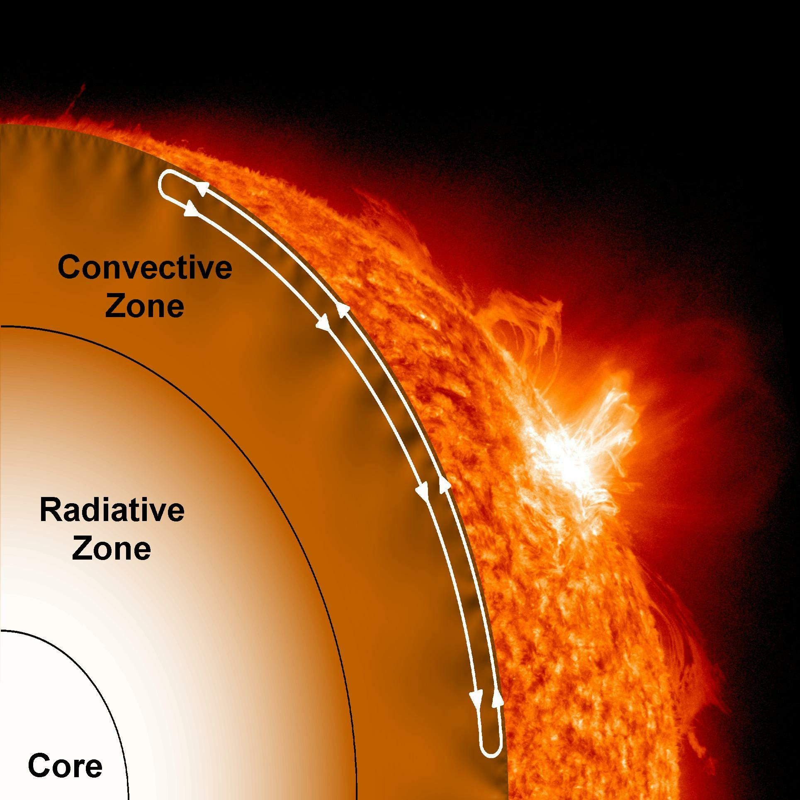
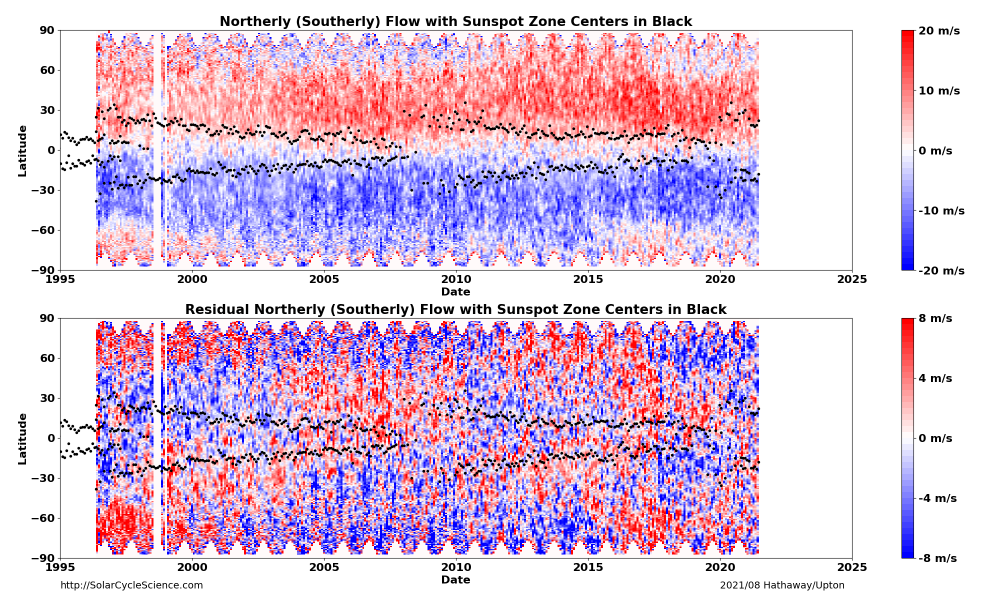

Solar Dynamics
Surface Flows
The transport of magnetic flux on the Sun's surface is driven by three key flow modes: convective flows, differential rotation, and meridional circulation.
While differential rotation and meridional flow are large-scale, Axisymmetric motions (east-west and north-south respectively), convective supergranular flows act as a turbulent diffusion mechanism on multiple spatial scales. Together, these currents reshape the solar magnetic field and guide the cycle.
Solar Convection
Convection zone thermal gradients drive plasma in a boiling motion spanning multiple spatial scales:
- Granules: Small-scale cells (~1,000 km diameter) with fast velocities (~3,000 m/s) and short lifetimes (~10 mins), bridging convective heat transport and atmospheric cooling.
- Supergranules: Mesoscale cells (~30,000 km diameter) with ~500 m/s flows, surviving for about a day. Discovered by Doppler mapping, they sweep magnetic elements to their boundaries, forming the solar magnetic network.
- Giant Cells: Massive interior-spanning structures (~200,000 km diameter) with weak velocities (~10 m/s) and months-long lifetimes. These transport angular momentum to drive differential rotation.
Acoustic waves generated by convection bounce through the solar interior. analyzing these sound waves — a discipline known as helioseismology — unveiled the cellular structures of supergranulation hidden underneath the photospheric surface.

Convective Scale Comparisons: Schematic showing relative sizes and lifetimes of Granules, Supergranules, and Giant Cells.
Differential Rotation

Stellar Rotation: The Sun does not rotate as a solid body. The equator completes a rotation in ~25 days, whereas the high polar latitudes take up to 36 days.
First noticed by Christoph Scheiner in 1610 via sunspot tracking, the Sun's rotation rate depends heavily on latitude. Richard Carrington quantified this synodic rotation as averaging 27.2753 days (the Carrington Rotation).
Subtracting the average rotation profile from Doppler observations reveals a residual flow pattern called Torsional Oscillations: chevron-shaped east-west flow bands that migrate equatorward over the 11-year cycle.
Helioseismology has mapped this deep into the convection zone, showing that the differential rotation persists down to ~0.7 R☉. at this boundary (the tachocline), it transitions to solid-body rotation in the radiative interior.

Torsional Oscillations: Top panel displays differential rotation history. Bottom panel displays residual east-west flow bands (red for fast eastward flow, blue for slow westward flow) showing the equatorward chevrons synchronizing with sunspot bands (black dots).
Meridional Circulation
Meridional circulation is a weak (~10–20 m/s) flow directing plasma poleward at the surface, with sinking motions at the poles and rising currents at the equator.
First hypothesized by Babcock (1961) and Leighton (1964) as a driver of polar field reversals, it was directly measured in 1982. Observations show that this meridional return flow occurs around 60 Mm depth — a shallow layer that has shifted prior paradigms assuming returns at the tachocline.
This meridional flow slows down in active sunspot latitudes, creating cycles of magnetic flux accumulation that directly influence solar prediction models.

Meridional Conveyor Belt: Sinking motions occur at the poles, with the return flow traveling equatorward about 60 Mm below the surface.

Meridional Flow History: Top panel shows total north-south meridional circulation. Bottom panel shows residual flow variations over time. Blue represents southward flow and red represents northward flow, with sunspot latitudes marked in black.